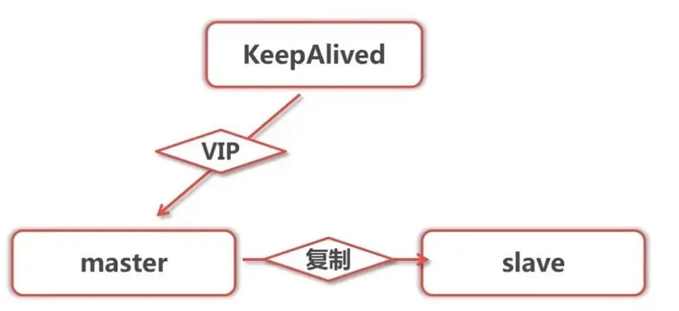
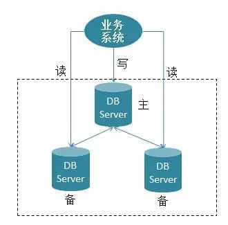
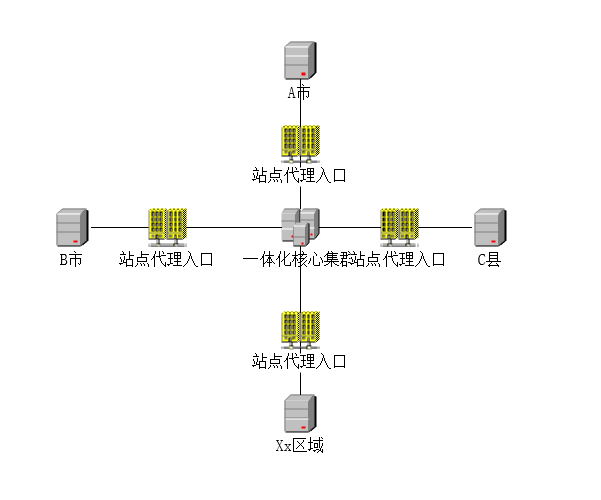
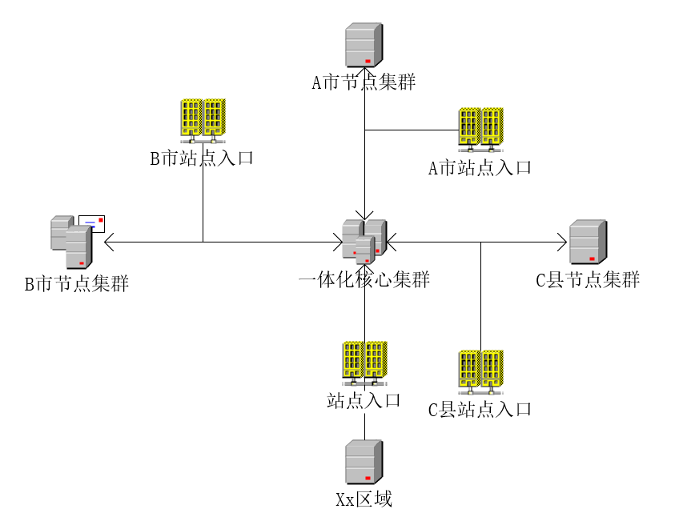
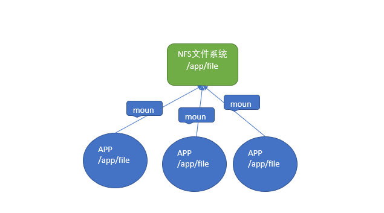
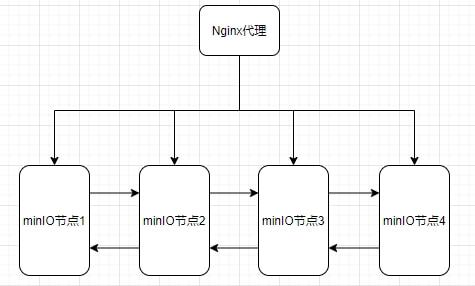
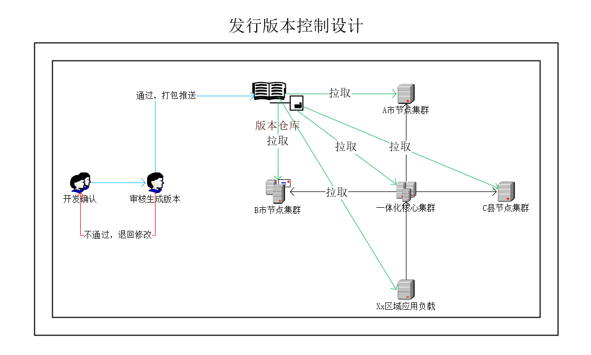

构建面向政务系统层级化SAAS架构的思考(三)系统实现
前言
如何解决政务系统目前存在的困境：事多钱少、规模化不足、数据互通问题、层级协同问题，在前篇文章：构建面向政务系统层级化SAAS架构的思考(一)提出了初步的解决思路，构建面向政务系统层级化SAAS架构的思考(二)系统设计提出了系统的设计，那么如何在系统中具体实现呢，本篇总结了如何在实现层面达到一体化设计？从几个方面来说明：网络、数据库、缓存、应用架构、资源存储、版本控制以及站点配置实现？
网络架构：虚拟内部网络
系统架构升级，首先需要构建一套虚拟内网系统，实现将各个层级、各个网络情况的服务器形成有效、稳定、安全连接，这是基础中的基础，在此基础上才能构建完整的分布式一体化平台。
我们需要将各个地方、各个网络环境进行统一的配置包含政务外、内网、政务网等，统一的管理，为一体化的应用部署、资源调用提供网络基础。
虚拟网络，我们通过openvpn实现多种网络、多重网络的组合，形成独立安全私网，为后续平台基础架构（数据库、缓存等）、分布式应用集群、运维控制等提供基础保障。
数据库、缓存架构：集群节点数据一致性
实现数据互联互通，保持数据一致性至关重要。其中有几种方案：
双机热备数据库（目前是这种）
双机热备，在虚拟内部网络，搭建数据库的双机热备系统，实现主、备节点的动态切换。
热备系统能够满足数据量小、并发量不大的情况，这样即有效保证了数据的一致以及上下级数据的有效同步，也满足数据的及时响应，要做的就是确保数据的定时备份，避免数据的丢失。
双机热备基本满足了架构试验阶段的系统需求，但是在业务量以及数据量更大的场景、分布式负载场景有造成系统的瓶颈。首先没有实现读写分离，数据库读写压力较大；其次，各个节点没有只读数据库，无法支撑网络中断仍然能够办理或者查看数据的要求。

一主多从架构
一主多从数据架构，为了弥补单数据库或者双机热备数据库的架构局限性，解决高并发大数据量的数据库瓶颈，升级设计读写分离的一主多从架构。
主从同步架构来提升系统的吞吐，通过在核心节点部署核心主数据库和若干从库，在各个集群节点至少有一个从库，实现在各个集群节点至少有一份可读数据的要求，满足系统异常情况下的数据查看要求。
一主多从的数据架构模式，主从的模式对网络的要求更高，需要构建稳定、高速的网络系统，另外，因主从同步的时间差对系统架构能力以及运维能力也提出了更高的要求。

应用架构：充分利用服务器资源
一体化平台的推进与演化需要2过程与步骤：架构试验阶段、分布负载阶段。
架构试验阶段
架构试验阶段设计，为了稳妥起见，我们将所有服务都部署在核心节点，所有节点均访问核心集群节点。
架构试验阶段设计实现，各个节点入口都只进行nginx配置代理，直接使用核心节点统一服务，根据系统的站点租户配置，设置不同的模块、功能以及流程，通过本阶段，实现一体化平台的有效验证，为后续系统的架构提供基本原型以及相关经验。
架构试验阶段局限性，这种架构弊端就是系统的抗风险能力较弱，资源的利用率较低，造成了内网服务器资源的大量闲置。

内网分布负载
内网分布负载，在完成架构试验阶段以后，为了提升系统的健壮性以及资源的有效利用，将有承载力的服务器空间我们部署整套微服务框架作为服务的非核心节点，在没有完全承载力的服务节点，我们部署部分的应用，将应用注册到核心节点。
内网分布负载实现是在核心节点以及各个子节点均有一套完整的应用服务平台，这样在各个层级节点的入口，我们可以通过nginx负载均衡的形式实现平台系统负载均衡，核心访问本节点服务器，其他节点作为备用服务，从而达到高可用、高可靠，核心节点失效仍然有保证了系统正常访问、系统办理业务，内部网络断开依然可以正常登录以及查看相关的数据。当然这个阶段对我们的网络、数据库架构、缓存结构、开发平台要求、文件存储也提出了要求。
内网分布系统不仅需要稳健基础的平台支持，对团队管理以及相关的技术水平、团队的沟通协作均提出了更高的要求，需要团队在不断探索中，提升完善各个各项工作。

文件存储系统
nfs系统
nfs系统适用于架构试验阶段，通过在核心集群节点完成磁盘的共享，使分布在不同服务器的应用可以共同完成非结构化数据共享读写，实现非结构化数据统一管理。

分布式文件系统
为了满足内网分布式负载架构需求，需要搭建minio的集群模式，实现所有资源文件在各个集群性节点中均有一份完整的资源文件备份，在各个节点均通过nginx实现所有集群的负载，当内网中断，仍然可以访问本地的数据资源，保证本地系统的正常查看以及下载。

发行版仓库建设
构建统一发行版仓库，支持全局多节点集群，实现统一发布更新，确保每个节点集群的应用版本统一、应用配置统一。
仓库搭建，在内网系统搭建docker仓库或者其他版本控制仓库，将应用、页面以及组件进行统一的版本化管理，在各个集群节点，通过重新执行即可获取最新镜像以及自动启动。
应用更新，开发人员进行相关功能的开发以及自我验证，提交仓库，完成相关的功能模块；开发经理进行相关的确认，完成版本的打包以及上传到版本发行仓库；运维实施人员通过各个集群拉取相关的最新应用进行发布更新，发布完成进行初步检验以及更新功能的检查。
通过版本控制降低因版本不一致带来数据以及业务风险，减少应用的重复上传、启动发布的过程，减轻系统维护的工作量。

系统站点配置：区划、用户、角色统一
站点综合管理，实现各个站点功能、模块、区划、角色、用户、流程等同一配置管理。
后端配置，先建立站点基本信息：区划、标识、基础配置等信息，再配置具体的模块以及模块的相关功能；
站点入口，站点在各个节点的代理入口设置站点标识，任何的网络请求都带有站点标识，通过拦截器等形式完成站点的跨站点的访问请求。本站点可以配置通过一体化平台的任何集群进行负载，增强了平台的健壮性，实现高可用、高可靠。
存在的问题
分布式一体化平台也是一个不断试验，推进的过程，在每个方面均需要进行试验、探索以及修正，需要在项目工作推进的同时兼顾平台的提升。
- 平台提升需要与项目进行统筹兼顾，不断平衡试验优化；
- 管理体系、技术体系、流程体系都需要不断的优化调整；
- 系统架构的基础需要保证多重网络下内网的网速、稳定性，系统设计需要考虑网络断开的影响；
- 系统架构对基础组件架构有更高的要求，组件架构投入较大时间精力进行研究测试验证。